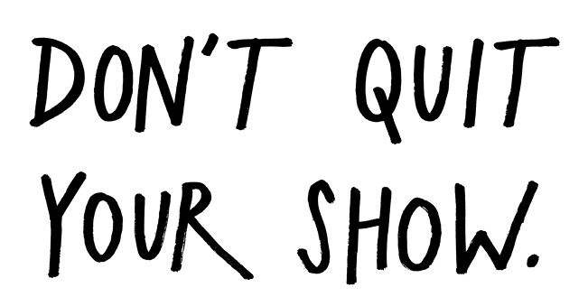
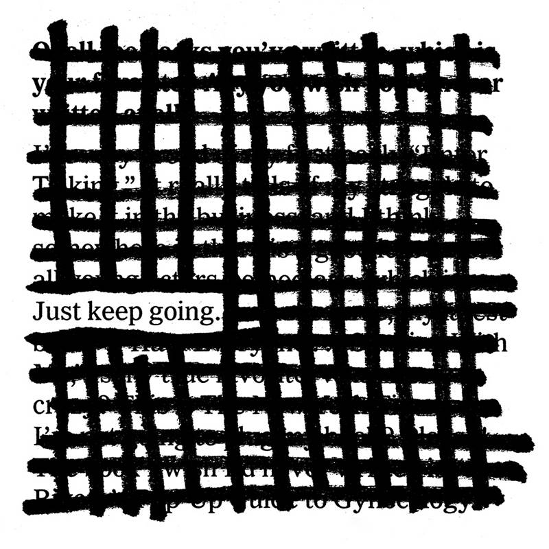
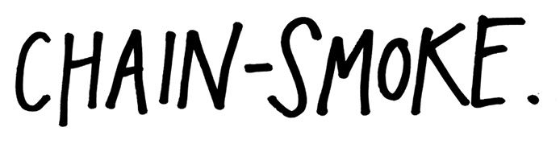
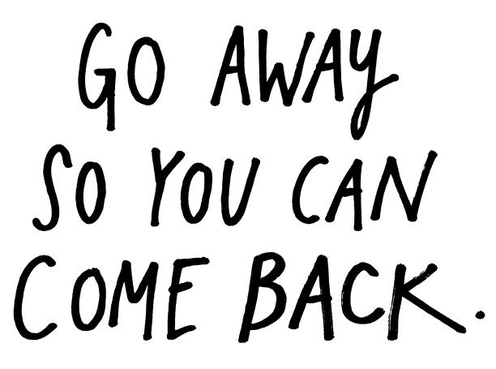
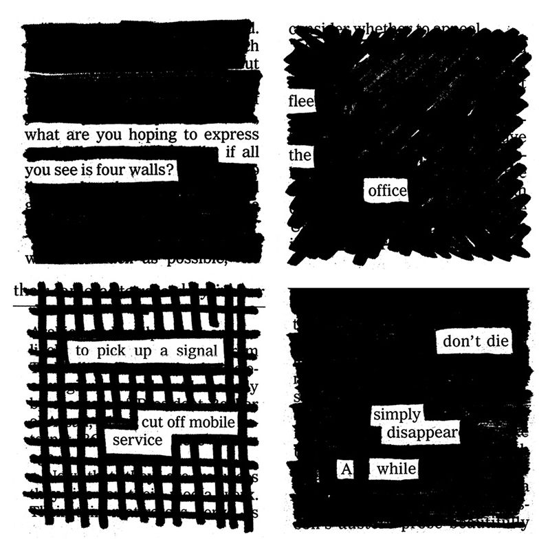
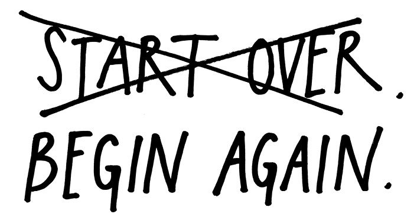
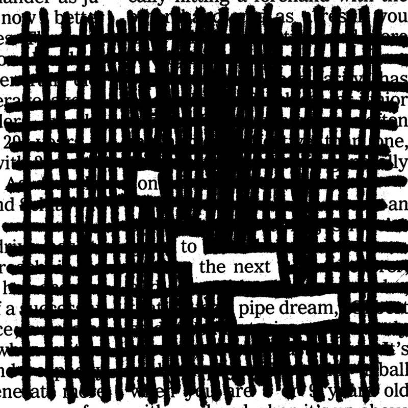

Every career is full of ups and downs, and just like with stories, when you’re in the middle of living out your life and career, you don’t know whether you’re up or down or what’s about to happen next. “If you want a happy ending,” actor Orson Welles wrote, “that depends, of course, on where you stop your story.” Author F. Scott Fitzgerald wrote, “There are no second acts in American life,” but if you look around you’ll notice that not only are there second acts, there are third, fourth, and even fifth ones. (If you’re reading the obituaries every morning, by now you already know this.)
The people who get what they’re after are very often the ones who just stick around long enough. It’s very important not to quit prematurely. The comedian Dave Chappelle was doing a stand-up gig in Dallas not long ago and he started joking about walking away from his lucrative deal with Comedy Central for his program, Chappelle’s Show. He said he was asked to come to a high school class and give some advice. “I guess, whatever you do, don’t quit your show,” he said. “Life is very hard without a show, kids.”
“In our business you don’t quit,” says comedian Joan Rivers. “You’re holding on to the ladder. When they cut off your hands, hold on with your elbow. When they cut off your arms, hold on with your teeth. You don’t quit because you don’t know where the next job is coming from.”
“Work is never finished, only abandoned.”
—Paul Valéry
You can’t plan on anything; you can only go about your work, as Isak Dinesen wrote, “every day, without hope or despair.” You can’t count on success; you can only leave open the possibility for it, and be ready to jump on and take the ride when it comes for you.
One time my coworker John Croslin and I came back from our lunch break and our building’s parking lot was completely full. We circled the sweltering lot with a few other cars for what seemed like ages, and just when we were about to give up, a spot opened and John pulled right in. As he shut off the car he said, “You gotta play till the ninth inning, man.” Good advice for both the parking lot and life in general.


A few years ago, there was a reality TV show on Bravo called Work of Art, where every week artists competed against one another for some cash and a chance at landing a museum show. If you won the week’s challenge, you were granted immunity for the next round, and you could breathe a little easier for the next week. The host would say something like, “Congratulations, Austin. You’ve created a work of art. You have immunity for the next challenge.”
If only life were like “reality” TV! As every author knows, your last book isn’t going to write your next one for you. A successful or failed project is no guarantee of another success or failure. Whether you’ve just won big or lost big, you still have to face the question “What’s next?”
If you look to artists who’ve managed to achieve lifelong careers, you detect the same pattern: They all have been able to persevere, regardless of success or failure. Director Woody Allen has averaged a film a year for more than 40 years because he never takes time off: The day he finishes editing a film is the day he starts writing the script for the next. Bob Pollard, the lead singer and songwriter for Guided by Voices, says he never gets writer’s block because he never stops writing. Author Ernest Hemingway would stop in the middle of a sentence at the end of his day’s work so he knew where to start in the morning. Singer/songwriter Joni Mitchell says that whatever she feels is the weak link in her last project gives her inspiration for the next.
Add all this together and you get a way of working I call chain-smoking. You avoid stalling out in your career by never losing momentum. Here’s how you do it: Instead of taking a break in between projects, waiting for feedback, and worrying about what’s next, use the end of one project to light up the next one. Just do the work that’s in front of you, and when it’s finished, ask yourself what you missed, what you could’ve done better, or what you couldn’t get to, and jump right into the next project.
“We work because it’s a chain reaction, each subject leads to the next.”
—Charles Eames

“The minute you stop wanting something you get it.”
—Andy Warhol
Chain-smoking is a great way to keep going, but at some point, you might burn out and need to go looking for a match. The best time to find one is while taking a sabbatical.
The designer Stefan Sagmeister swears by the power of the sabbatical—every seven years, he shuts down his studio and takes a year off. His thinking is that we dedicate the first 25 years or so of our lives to learning, the next 40 to work, and the last 15 to retirement, so why not take 5 years off retirement and use them to break up the work years? He says the sabbatical has turned out to be invaluable to his work: “Everything that we designed in the seven years following the first sabbatical had its roots in thinking done during that sabbatical.”
I, too, have experienced this phenomenon: I spent my first two years out of college working a nondemanding part-time job in a library, doing nothing but reading and writing and drawing. I’d say I’ve spent the years since executing a lot of the ideas I had during that period. Now I’m hitting my seven-year itch, and I find myself needing another period to recharge and get inspired again.

Of course, a sabbatical isn’t something you can pull off without any preparation. Sagmeister says his first sabbatical took two years of planning and budgeting, and his clients were warned a full year in advance. And the reality is that most of us just don’t have the flexibility in our lives to be able to walk away from our work for a full year. Thankfully, we can all take practical sabbaticals—daily, weekly, or monthly breaks where we walk away from our work completely. Writer Gina Trapani has pointed out three prime spots to turn off our brains and take a break from our connected lives:
• Commute. A moving train or subway car is the perfect time to write, doodle, read, or just stare out the window. (If you commute by car, audiobooks are a great way to safely tune out.) A commute happens twice a day, and it nicely separates our work life from our home life.
• Exercise. Using our body relaxes our mind, and when our mind gets relaxed, it opens up to having new thoughts. Jump on the treadmill and let your mind go. If you’re like me and you hate exercise, get a dog—dogs won’t let you get away with missing a day.
• Nature. Go to a park. Take a hike. Dig in your garden. Get outside in the fresh air. Disconnect from anything and everything electronic.
It’s very important to separate your work from the rest of your life. As my wife said to me, “If you never go to work, you never get to leave work.”
“Every two or three years, I knock off for a while. That way, I’m constantly the new girl in the whorehouse.”
—Robert Mitchum

“Whenever Picasso learned how to do something, he abandoned it.”
—Milton Glaser
When you feel like you’ve learned whatever there is to learn from what you’re doing, it’s time to change course and find something new to learn so that you can move forward. You can’t be content with mastery; you have to push yourself to become a student again. “Anyone who isn’t embarrassed of who they were last year probably isn’t learning enough,” writes author Alain de Botton.
The comedian Louis C.K. worked on the same hour of material for 15 years, until he found out that his hero, George Carlin, threw out his material every year and started from scratch. C.K. was scared to try it, but once he did, it set him free. “When you’re done telling jokes about airplanes and dogs, and you throw those away, what do you have left? You can only dig deeper. You start talking about your feelings and who you are. And then you do those jokes and they’re gone. You gotta dig deeper.” When you get rid of old material, you push yourself further and come up with something better. When you throw out old work, what you’re really doing is making room for new work.
You have to have the courage to get rid of work and rethink things completely. “I need to sort of tear down everything I’ve done and rebuild from scratch,” said director Steven Soderbergh about his upcoming retirement from making films. “Not because I’ve figured everything out, I’ve just figured out what I can’t figure out and I need to tear it down and start over again.”
The thing is, you never really start over. You don’t lose all the work that’s come before. Even if you try to toss it aside, the lessons that you’ve learned from it will seep into what you do next.
So don’t think of it as starting over. Think of it as beginning again. Go back to chapter one—literally!—and become an amateur. Look for something new to learn, and when you find it, dedicate yourself to learning it out in the open. Document your progress and share as you go so that others can learn along with you. Show your work, and when the right people show up, pay close attention to them, because they’ll have a lot to show you.
